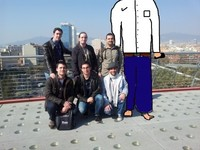
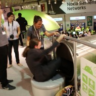
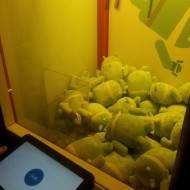
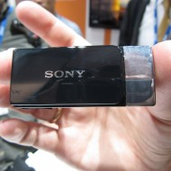
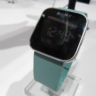
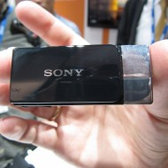
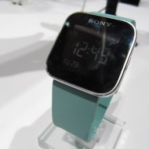

Bueno, bueno… Esto parece que ya acaba. El MWC digo, no el mundo, aunque según algunos tampoco le queda mucho. ¿Como os ha sentado la ingente cantidad de información, datos, números, fechas, datos, más datos, más datos…?
Cada año contamos los días que quedan cuando se acerca un evento de este tipo, al igual que pasa con en E3 dentro del mundo de los videojuegos, por poner un ejemplo, y en tan solo 3 días tenemos tal cantidad de información que incluso una semana después aún podemos estar asimilando todo lo que nos han enseñado. Todos tenemos ganas de ver cosas nuevas, pero no todos somo capaces de entender los tecnicismos, nomenclaturas o simplemente nos hacemos un lío entre marcas, modelos, etc.
¿Que tal si hablamos un poco de lo que ha sido este MWC 2012 pero desde una perspectiva “exterior” (literal y metafóricamente)? Yo personalmente no he tenido la suerte de disponer de una entrada al evento, pero sí he podido ir a BCN para quedar con los redactores que sí han podido entrar a la feria y como no, conocer a algunos de nuestros lectores con los que compartimos una magnífica velada la noche del Lunes, y aprovecho desde aquí para mandarles un saludo a todos. Pero vale ya que me estáis liando…
Así que comentemos un poco lo que han dado de sí estos días, pero sin complicaciones, y hablando no de teléfonos, tablets y demás, sino un poco sobre lo que ha sido esta feria para alguien que la ha vivido desde fuera.
 Todo empezó el Sábado, cuando el señor Dukevante llegó al aeropuerto de BCN-El Prat proveniente de Madrid-Barajas. Allí le esperaba un compañero de redacción, Adri, ¡vestido nada menos que de chofer! Con esto ya os podéis imaginar el ambiente que se respira entre nosotros. Nuevamente el señor Dukevante nos tenía una sorpresa preparada, ya que trajo consigo un puñado de tarjetitas de visita para repartir, pero por alguna extraña razón desaparecieron de entre sus pertenencias y nunca más se supo de ellas. Ismael, al igual que yo, llegamos también el Sábado.
Todo empezó el Sábado, cuando el señor Dukevante llegó al aeropuerto de BCN-El Prat proveniente de Madrid-Barajas. Allí le esperaba un compañero de redacción, Adri, ¡vestido nada menos que de chofer! Con esto ya os podéis imaginar el ambiente que se respira entre nosotros. Nuevamente el señor Dukevante nos tenía una sorpresa preparada, ya que trajo consigo un puñado de tarjetitas de visita para repartir, pero por alguna extraña razón desaparecieron de entre sus pertenencias y nunca más se supo de ellas. Ismael, al igual que yo, llegamos también el Sábado.
El Domingo llegaron el resto de integrantes del equipo, y nada más llegar al recinto, el ambiente que se respiraba era de…de…ciudad, pero también de mucho interés por lo que nos depararía este evento. La gran mayoría de las personas que estaban por ahí fuera iban con su traje y su corbata, ya tenían su acreditación colgada del cuello cual medalla olímpica, y no se oía hablar de otra cosa que de conferencias, programa de actividades, tablets y teléfonos sacando humo arriba y abajo; una locura casi. Nosotros en cambio fuimos tan tranquilamente con nuestras mochilas a sacar los pases pensando que tardaríamos la tira y en cuestión de minutos ya los teníamos, así que nos pusimos a buscar un sitio donde comer. En realidad ya estaba reservado, así que simplemente nos montamos en el autobus y nos dirigimos hacia allí. Adri nos hizo de guia.
Obviamente gran parte de los temas de conversación fueron relacionados con el evento en sí, los horarios, quien iba a qué conferencia, etc. Pero también hubo momentos en los que el tema se desviaba un poco y salían pequeñas anécdotas como cuando casi se cae un camarero, a lo cual dedujimos que la culpa era del señor Dukevante, pues por lo visto tiene cierta tendencia a que ocurran cosas extrañas a su alrededor, como que en el momento en que se decide a observar la sagrada familia perfectamente iluminada de noche, en ese preciso momento, se apagan las luces. Nada más acabar la comida, nos dirigimos a un parque cercano para charlar un rato y acto seguido nos separamos ya que esa misma tarde ya había la primera cita con la feria: el evento de Sony.
Allí nos esperaba un compañero de batallas que no pudo asistir a la comida (es el alto de la foto), Seth, aunque en realidad el evento en sí no fue más que una excusa para tomarse un buen puñado de cervezas, mientras a duras penas nuestros enviados especiales se enteraban de lo que les estaban contando. No, hablando enserio esta primera toma de contacto con el MWC fue un buen comienzo, y tenéis todos los detalles en este enlace. Después nos volvimos a reunir los demás con los que asistieron a la cita para cenar unos frankfurts mientras veíamos el partido de futbol, (que creo recordar que jugaba el FC Barcelona y no todos nuestros integrantes eran precisamente seguidores de este equipo) y comentamos un poco los detalles de la primera presentación: terminales nuevos, uno por gama, donde vemos como Sony quiere posicionarse cada vez mas en el mundo Android, y el comentario de la noche fue el hecho de que dichos terminales no vinieran con ICS, sino con Gingerbread, aunque sí tendrán su correspondiente actualización.
El Domingo llegaba a su fin y teníamos que dirigirnos cada uno a su respectivo aposento para afrontar el “primer día” de MWC, día completo.
Lunes. Como os podéis imaginar, aquí poco o nada de tiempo se tuvo para salir del recinto, pues el calendario era de lo más apretado. A lo largo del día iban saliendo nuevas noticias y novedades, una más interesantes que otras. A modo de resumen, aquí os dejaré unas cuantas:
- La conferencia de HTC dejo clara la intención de la compañía de no querer quedarse atrás en Android, aunque apueste igualmente por WPhone. EL empujón que tuvo con el primer Nexus y sus terminales Desire o Wildfire parece que han pasado a mejor vida y ahora han decidido no sacar tantos terminales distintos y centrarse más en hacerlos bien hechos y de mejor calidad, aunque el diseño sigue siendo fiel a su estilo.
- Huawei. Poco más que decir de esta empresa cuando hemos visto el gran caballo alado que montaron en el MWC…¡hecho con móviles! Los terminales que presentaron estos chicos no eran moco de pavo, y eran unos productos tremendamente potentes: procesadores quad-core, pantallas HD o cámaras de 8Mpx son sus bazas.
- Samsung Galaxy Note 10.1 era uno de los productos más esperados. En plena Plaza de Catalunya había una pancarte enorme cubriendo la fachada de un edificio y en la misma plaza un stand promocionaba su versión “de bolsillo”, el Galaxy Note. Una tablet que viene a marcar un poco la diferencia gracias a su Stylus, al igual que intentara HTC con su Flyer, y para ello tenían a una serie de personas dibujando retratos y caricaturas de los asistentes para demostrar las capacidades de este nuevo gadget.
- Asus. Podríamos dejar aquí los comentarios porque la verdad es que todo lo que sale de esta casa es sencillamente increíble. Desde siempre ha sido una de las marcas favoritas para mis PC’s, pero desde que se metieron en el mundo de las tablets con la Transformer me están gustando cada vez más. Esta vez han dado un paso mucho mayor presentando sus nuevos productos pero que mejor que os paséis por el artículo que les dedicamos y os lo miréis con detenimiento, no tiene desperdicio.
- Y otra compañía que parece que tiene que pasar desapercibida pero que todo hay que decirlo, debe haber puesto más pasta que ninguna en este MWC es ZTE. Como el resto, ha presentado teléfonos y tablets y también os recomiendo que os leáis la reseña.
 Como vemos, mucha información en muy poco tiempo (donde podríamos añadir los nuevos teléfonos de Orange o la esperaba versión de Ubuntu for Android, que Danny tuvo el placer de ver en funcionamiento y dijo que realmente es una pasada), y condensarla en un mismo lugar sería una locura; pero para locura la que estábamos teniendo todos con las baterías de nuestros teléfonos. Yo en mi caso, el día anterior pude llegar “tranquilamente” a casa rondando el 5% de batería a eso de las 00.30 de la noche. Aguantó como un campeón, vamos. El problema vino el lunes, que a las 17.00 de la tarde estaba solo al 10% y aún tenía que contactar con los demás para la noche especial, así que me tiré pateando toda Barcelona buscando una batería para mi Galaxy Nexus, que desgraciadamente no encontré, y tuve que ir toda la tarde en modo avión, conectando los datos cada cierto tiempo para recibir y enviar los mensajes correspondientes. Pero llegó a la noche y menos mal que mis compañeros tenían cargador.
Como vemos, mucha información en muy poco tiempo (donde podríamos añadir los nuevos teléfonos de Orange o la esperaba versión de Ubuntu for Android, que Danny tuvo el placer de ver en funcionamiento y dijo que realmente es una pasada), y condensarla en un mismo lugar sería una locura; pero para locura la que estábamos teniendo todos con las baterías de nuestros teléfonos. Yo en mi caso, el día anterior pude llegar “tranquilamente” a casa rondando el 5% de batería a eso de las 00.30 de la noche. Aguantó como un campeón, vamos. El problema vino el lunes, que a las 17.00 de la tarde estaba solo al 10% y aún tenía que contactar con los demás para la noche especial, así que me tiré pateando toda Barcelona buscando una batería para mi Galaxy Nexus, que desgraciadamente no encontré, y tuve que ir toda la tarde en modo avión, conectando los datos cada cierto tiempo para recibir y enviar los mensajes correspondientes. Pero llegó a la noche y menos mal que mis compañeros tenían cargador.
Sí, por fin llegó la noche del Lunes, esa tan especial porque teníamos cena de gala no solo los redactores, sino con algunos lectores que vinieron a BCN. Simplemente decir que fue una magnifica cena, donde conocimos gente genial y donde charlamos largo y tendido sobre temas de todo tipo, aunque predominaban los que os podéis imaginar. Fotos, impresiones, opiniones…cada uno tenia la suya. Incluso tuvimos un mago que nos deleitó con su habilidad con las cartas (disculpa pero no recuerdo tu nombre, mi cabeza no da para mucho :S).
Y con el final de la cena llegó el final del día, y nuevamente cada uno se dirigió a descansar los huesos después de un día agotador.
Martes, penúltimo día de feria, pero último para mi. De nuevo la mayoría del equipo estaba en la feria y como no, hubo también muchas novedades que podéis revisar en EAL, como el nuevo Joyn, conferencias de Motorola, el nuevo Samsung Galaxy S3… y además algunos tuvieron la suerte de ir a comer con el equipo de Vimeo, que los llevaron con coche VIP a un hotel para la comida en cuestión, todo un lujazo. El poco tiempo que me quedaba lo perdí invertí comiendo con Cedric, el cual había conocido ese mismo fin de semana y con el que estuve encantado de compartir mesa comiendo una hamburguesa que era más grande que las 2 partes del pan juntas. Nada más acabar, Cedric se dirigió nuevamente al recinto y yo encaminé mis pasos al centro a por mis cosas y de vuelta al aeropuerto, corriendo porque casi pierdo el avión.
Pero eso solo significa una cosa, y es que no quería irme y quería aprovechar todo el tiempo hasta el último minuto. Han sido unos días magníficos con los que he compartido muchas cosas con gente genial y que aunque el MWC sea la feria más importante del mundo de este tipo y aún así no tener entrada, no hay que olvidar que fuera de ella también te lo puedes pasar genial, hablando de las cosas que te interesan y vivir en primera persona el ambiente que se cuece por allí, pudiendo ver casi de primera mano todo lo que ocurre. Así que poco más puedo decir, solo agradecer a todos los que conocí y a los que ya conocía los momentos que pasamos juntos por la Condal, y agradecer uno a uno su compañía:
Redactorres EAL y Omicrono:
- Paolo (no ha estado con nosotros pero debería, ya que sin el esto no habría sido posible)
- Danny
- Juanma
- Adri
- Miguel
- Isma
- Cedric
- Olivia
- Erick
- Si me dejo alguno que me avise…
Y como no, a los lectores que vinieron a verme pero que por desgracia no recuerdo los nombres, solo recuerdo el de Miriam, así que si leéis esto, dejadme un comentario y os añadiré a la lista ;)
Bueno, esta ha sido mi experiencia del MWC vista desde fuera, y que sin duda volvería a repetir, pero a ser posible, la próxima vez poder entrar. Ahora os dejo una serie de fotos donde veréis que no todo es tecnología, y que lo bien que nos lo pasamos no tiene precio.
  
Si queréis verlas todas (excepto alguna que por motivos de seguridad no puede ser mostrada al mundo), pasad por este enlace.
¡Muchas gracias a todos!
Seguramente también te interesará...
 |
 |
 El One S seria la version menos potente y por lo tanto mas económica del One X. En cambio el One V vendría a situarse en la gama media para hacer la competencia a los terminales presentados y que se presentaran en el MWC en este nicho de mercado. El One S tendrá una pantalla mas pequeña, situándose en las 4,3 pulgadas mientras que el One V vendrá con una pantalla de 3,7 pulgadas y tendrá un diseño diferente a los otros dos. Estos tres nuevos terminales estarán completamente integrados con Dropbox del cual dispondremos de una oferta especial de 25 GB gratuitos durante 2 años. Las características del One S son las siguientes:
El One S seria la version menos potente y por lo tanto mas económica del One X. En cambio el One V vendría a situarse en la gama media para hacer la competencia a los terminales presentados y que se presentaran en el MWC en este nicho de mercado. El One S tendrá una pantalla mas pequeña, situándose en las 4,3 pulgadas mientras que el One V vendrá con una pantalla de 3,7 pulgadas y tendrá un diseño diferente a los otros dos. Estos tres nuevos terminales estarán completamente integrados con Dropbox del cual dispondremos de una oferta especial de 25 GB gratuitos durante 2 años. Las características del One S son las siguientes:

") 
